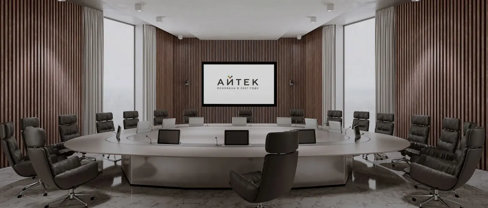

Федеральный исследовательский центр
Апатиты · 60 рабочих дней
Комплексное оснащение конференц-зала в городе Москва

Стоимость и срок указаны для этого объекта. Смета нового проекта зависит от помещения, комплектации и состава работ.
В рамках данного проекта необходимо разработать и реализовать проектное решение по оснащению комплексом средств аудиовизуального оборудования в строящийся конференц-зал. Целю данного проекта является создание мультимедийного центра для возможности проведение совещаний, презентаций и конференций в интерактивном формате с использованием современных технологий. Одно из основных требований Заказчика заключалось в том, чтобы максимально сохранить стильный дизайн помещения, органично вписав всю цифровую инфраструктуру в существующий интерьер.
Специалистами ГК Айтек был успешно завершён проект по комплексному оснащению объекта современным мультимедийным оборудованием под ключ. В ходе реализации проекта был произведён весь спектр работ — от поставки оборудования и разработки проектной документации до финальной отладки систем. Состав реализованного комплекса: Интерактивная сенсорная панель 98" Дополнительные индивидуальные врезные моторизированные мониторы 24", дублирующие изображение главного экрана Звуковые врезные потолочные системы Врезная конференц-система для интерактивного взаимодействия во время семинаров и групповых сессий Камеры захвата с умным наведением на активного спикера Скрытая многоуровневая коммутация Централизованное управление всем оборудованием с единого пульта
В рамках данного проекта специалистами нашей компании была разработана полная концепция дизайна помещения с интеграций в него комплекса средств для проведения различных мероприятий. Комплекс оборудования включал в себя различные мультимедийные системы, которые мы опишем отдельно:
Показ презентаций осуществляется с помощью видеостены высокого разрешения, состоящую из 9 бесшовных видеопанелей. Общее разрешение видеостены составляет 1920х1080 х 9, то есть более 8К. Такое разрешение позволит выводить на экран даже самые мелкие детали или изображения в высоком разрешении, например, медицинские чертежи.
Дублирующие дисплеи предназначены для того, чтобы члены переговоров могли не оборачиваться в сторону основного экрана. Вывод изображения на дублирующие дисплеи возможен как индивидуальный/независимый(на всех мониторах разное), так и дублирующий с основным экраном(на всех мониторах одинаковое).
Интерактивная трибуна – состоящая из классической трибуны для выступлений, со встроенным в неё интерактивным дисплеем. Является независимым источником показа презентаций с помощью, либо USB, либо интернета. Свойство интерактивности позволяет производить коррективы или же пометки в ходе показа презентации и в реальном времени. Вывод информации с интерактивной трибуны возможен, как на основной экран, так и на дублирующие дисплеи, расположенные за столом.
Система профессиональной видеоконференцсвязи позволяет производить стабильные онлайн телемосты между филиалами в высоком качестве, в отличии от классического Skype. Профессиональные камеры позволяют захватывать, как отдельных участников переговоров, так и весь зал в целом. Функционал ВКС системы позволяет не только обмениваться изображениями в высоком качестве, но и обмениваться электронными документами в реальном времени с возможностью редактирования, как одной, так и другой стороны переговоров. Также система позволяет выводить несколько одновременных изображений с видеокамер или же только одно, на усмотрение пользователя.
Для усиления речи участников переговоров на столе были предусмотрены встраиваемые настольные микрофоны являющиеся частью конференц-системы. Цифровая конференц-система позволяет участникам назначать приоритет выступления для ведущего, управлять всеми микрофонами в зале и проводить открытые онлайн голосования.
Для обеспечения звукового сопровождения мероприятий были установлены профессиональные подпотолочные акустические системы. Во избежание акустической цикличной “заводки” микрофонов они были установлены специальным образом для пространственной развязки. Также в системе были предусмотрены активные подавители обратной связи.
Все управление системой осуществляется централизованным способом в одном месте и на одном дисплее. Заранее разработанное графическое программное обеспечение позволяет управлять всеми функциями оборудования без особых профессиональных навыков. Например, для управления микрофонами в зале, достаточно лишь на отрисованной мнемосхеме зала выбрать нужный микрофон и путём нажатия на подсвечивающуюся картинку микрофона отключить его.
В бриф перейдут выбранный проект, тип помещения и бюджет примера. Все параметры можно изменить.